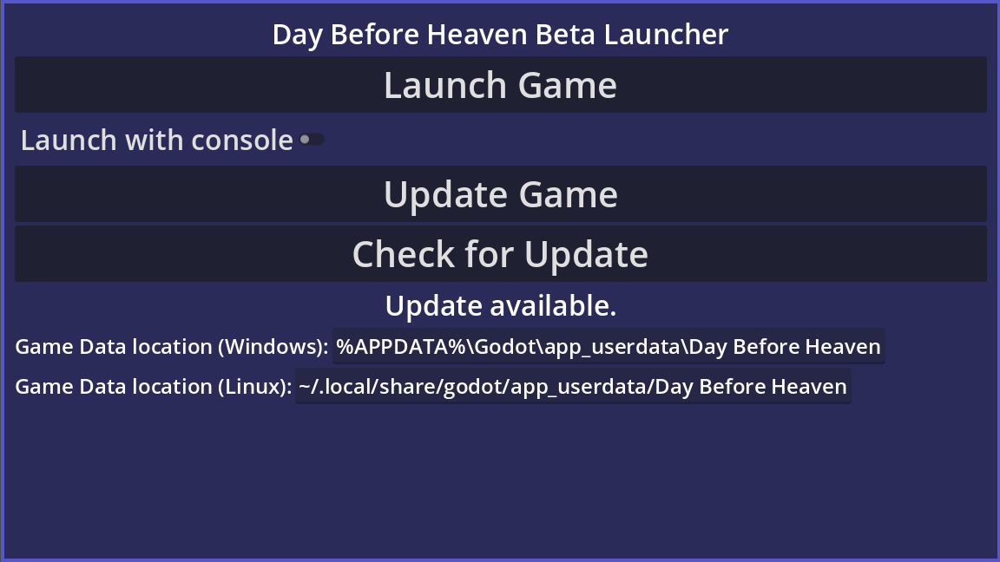

PLAY HERE
DOWNLOADS
Windows Launcher Linux LauncherLAUNCHER
Rather than download the game directly, a launcher is provided to update the game without needing to re-download the entire game each time (pictured below).
Simply download the launcher for your platform, extract it, and run the executable inside. When an update is available, the launcher will inform you and offer to download and install it for you.
The location of the actual game and save files is listed in the launcher, though cannot be changed at this time.
The final release of the game will be on Steam, but for the time being the launcher will be the primary way to play the game.
